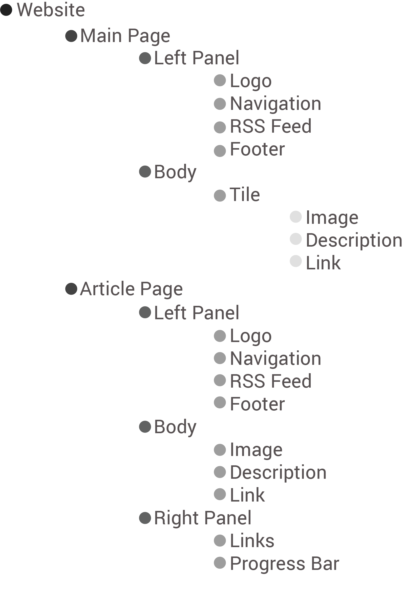

RIT Reporter Website Redesigning
Purpose
The Reporter Magazine aims at informing the reader about the current things which are being undertaken at the university level. It encloses information on the front of University News, Sports Updates, interesting things happening around in the city, technical advancement on vast research work and spectacular views shared on global and political issues. Not only this, all kind of achievements, competitions, events, measures, investigations and research work in the university are listed here. The reporter magazine intends to give the reader a rich experience through reading and take its audience through an informative journey about the achieved, ongoing and upcoming happenings at the university.
Target Audience
- Folks:
- RIT Community, Multinational Students, Alumni, Faculty, and Staff, their family members and regional people.
- Age Group:
- 18 and above
- Interests:
- Technical Development, Sports, Social Media, Political News and Views, Events and Fest happening in the City.
- Technical Knowledge:
- They have the good command of the English language. They are visual literate and have the good grasp at reading pictures. They know fundamental techniques of using a computer, opening a website and traverse using hyperlinks.
Existing Website
Site Map
Mood Board

Style Board
High Fidelity Wireframes
High fidelity wireframes played vital role in redesigning the website. With the help of wireframes I was able to focus more on the functionality of the new model. Wireframes is the place where I took a decision on how to display vertical sliding bar and the type of layout for articles.
For the reference I have used a browser at the background. This helped me in getting an idea of what is visible to users and what is not visible to them. I have conducted a pilot test on with wireframes where I realized two problems.
First, the article images and description may vary from article to article then it will be not possible to maintain same height of article tile. Second, the content should always remain in the visibility of user and it does not make sense to slide out the content if user tries to open navigation bar.
Article Wireframe with Grid
While designing wireframes I have used 960gs grid system. 960gs is basically acts as a guide for designers when they are creating web applications. 960 stands for 960 horizontal pixels on a web page and it can be divided into 12, 16, and 24 equally size columns. I have used 12 column grid this this website because BoorstrapJS follows 12 column grid and most of the applications now a days are built with the help of BoorstrapJS.
- Advantages:
- - 960gs looks good on all the monitors
- - Exact measurements helps in efficient designing
- - Bridges the gap between designer and developer
Final Visual Screens

Benefits
By redesigning the web pages first advantage is that reader can quickly relate to which page he is currently on just looking at ambient color at the background. Second advantage is that on the article page there is a facility of unlimited scrolling which does not breaks the flow of the user which reading the articles. User can keep reading one article after the other without breaking the flow.